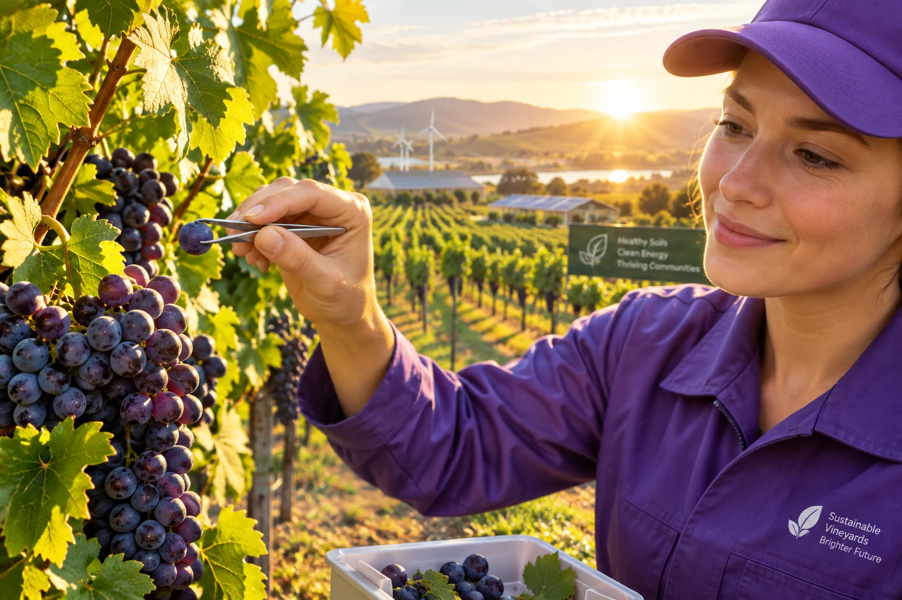

We move one grape at a time, which raises questions. This page answers them with the confidence of a company that has hired three sustainability consultants and listened to one.
An independent auditor reviewed our operations and produced a report we have chosen to summarize rather than publish.
packaging-to-grape weight ratio, which the auditor circled twice in red pen
of CO2 per delivered grape, roughly the footprint of the grape's entire home vine for a year
of our couriers travel by bicycle, e-bike, or a brisk meaningful walk

Our partner micro-vineyards harvest one grape per order, leaving the rest of the bunch to, in the words of our head of agronomy, "keep doing whatever bunches do." This is the gentlest harvesting model in the produce industry, and by volume, the least productive.
Our grape-neutral pledge commits us to offsetting every delivered grape by planting, funding, or at minimum sincerely appreciating an equivalent grape elsewhere. Milestones on the road so far:
We reduced tissue layers from six to four after a viral photo of a landfill that was mostly our lavender. The unboxing, customers agreed, still slaps.
We purchased a small vineyard in Oregon and instructed it to simply exist. It produces grapes we do not sell, touch, or visit. Our accountants remain uneasy.
Deliveries within 400 meters are now completed on foot, carbon-free. Couriers describe these as "the long ones."
By 2030, every grape we deliver will be matched by a grape we leave alone. We are already leaving billions of grapes alone, so internally this milestone is considered achieved. Legal has asked us to keep the date anyway.